| SIKABOTA FIG TREE HOME |
People |
Life in relation
People meet. Connections are made. Relations are built. Love is the link. |
Dixon Kelvin Chimuka Sikabota
Born 1962. Died 2014.
As head of the family, the late Dixons first priority was to ensure health and safety for his wife and children.
In his young days he struggled hard to get an education as an accounts clerk (ACNC), and this gave him the opportunity for small jobs now and then.
The late Dixons strongest principles where to keep an open mind, be honest and maintain a high standard in ethics towards all mankind.
He passed away 31st July 2014. He endured exhausting challenges. Read the story of his life in The Father of Andromeda. |
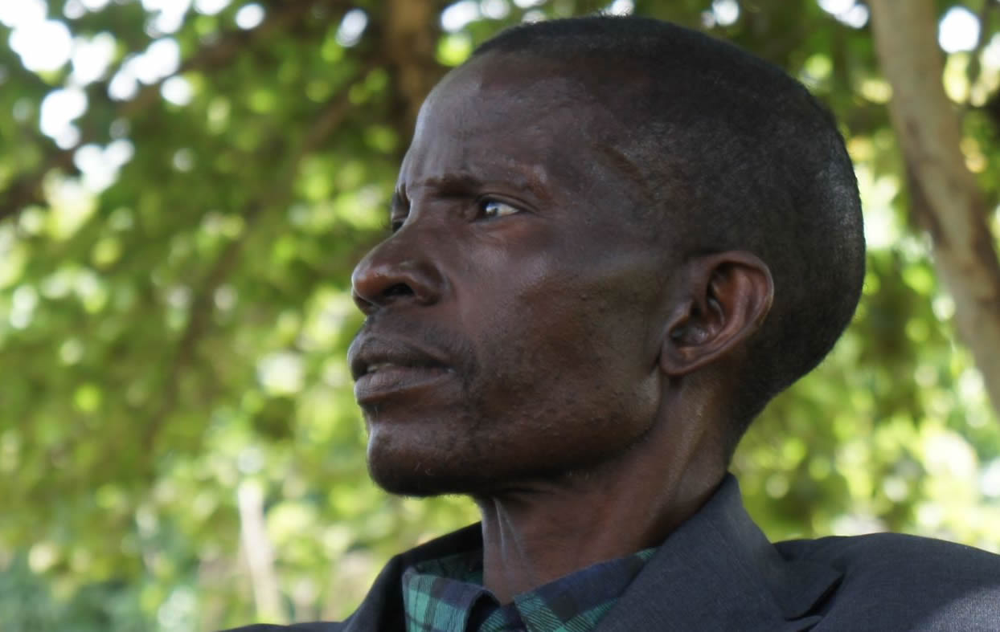 |
Kotutu Sikabota
Born 1987
Kotutu was the treasure the late Dixon found after many years of challenges.
She is sweet, kind and strong. Her sharp intellect is completely focused on creating a prosperous life for her children.
She has dreams too, about a better life, but happiness always comes first.
If you are looking for true hospitality. Look no further!
Now a widow, life has become hard. |
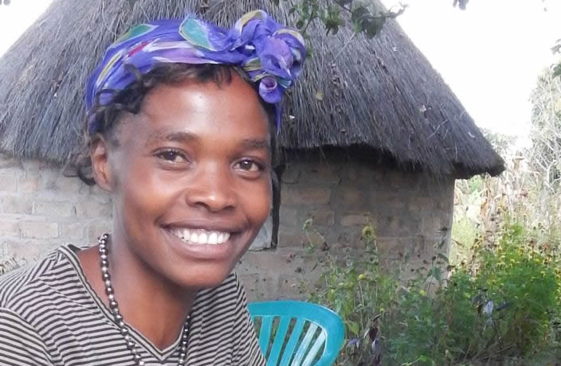 |
Andromeda Sikabota
Born 1980
When the late Dixon first heard about the billions of stars in the Andromeda galaxy as a young man, he instantly decided that his first born, boy or girl, should be named Andromeda.
The boy was born, and he lives up to that name. Andromeda is educated in teaching and carpentry, and he has built his own home.
His kind and helpfull nature will fullfill his dreams one day.
After the loss of his father, he is now the eldest, and with that a heavy responsibility rests with him. |
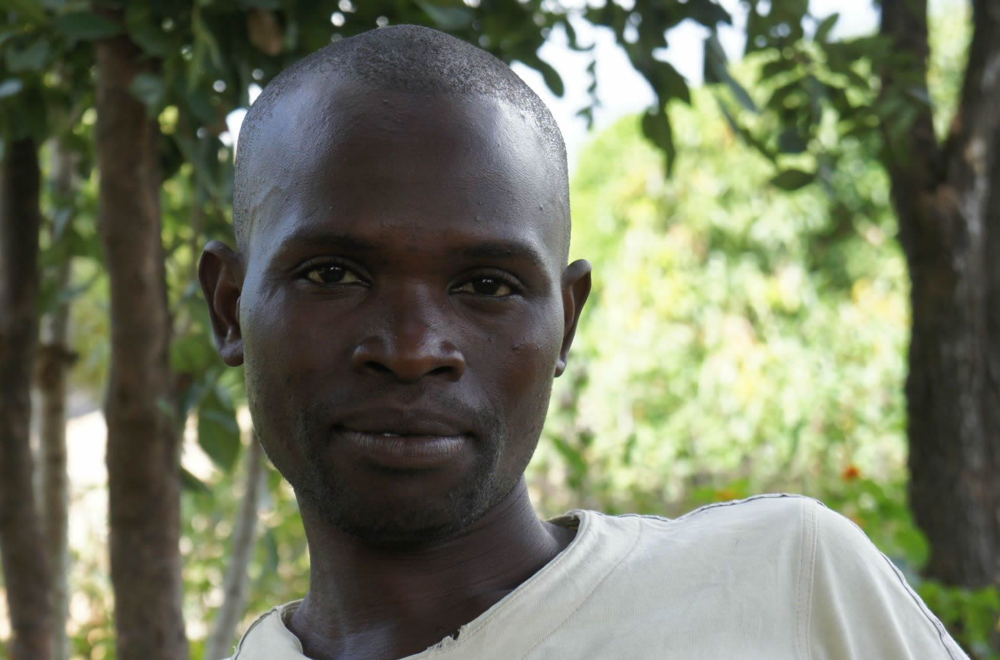 |
Kelvin Sikabota Kaisa
Born 1985
Kelvin lives in Kitwe, where he works as a chemical engineer.
A kind and diligent man, who knows his heritage.
However, for many years everybody thought he was the late Dixons first born. But then Andromeda showed up.
Currious to now why? Read The Father of Andromeda... |
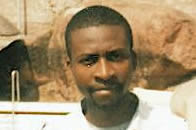 |
Muyoba Chipobe Sikabota
Born 1996
Muyoba is the youngest of the late Dixon Sikabotas sons.
He studies hard.
A strong young man with a soft smile.
|
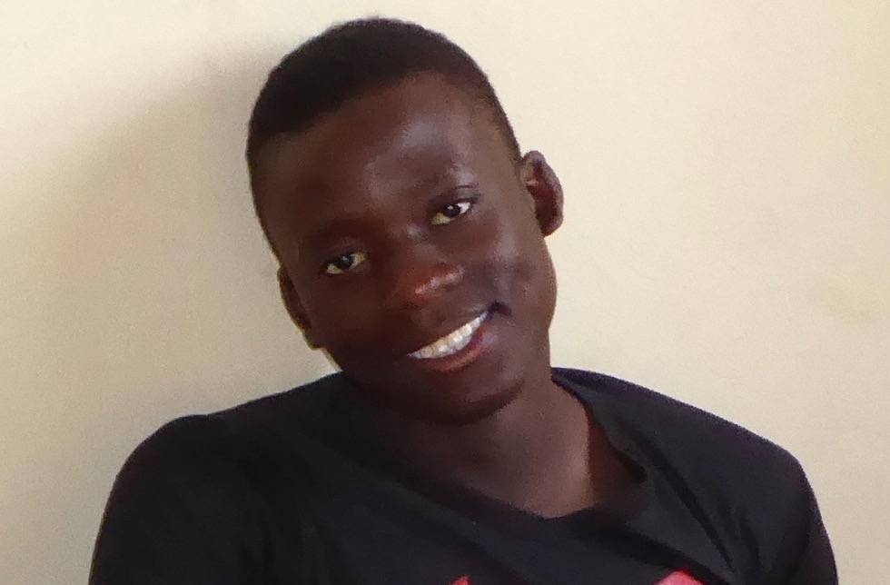 |
Mulako
Born 2004
Kotutus first born. He lives in Nalube
He is kind and generous, and looks after his young siblings.
|
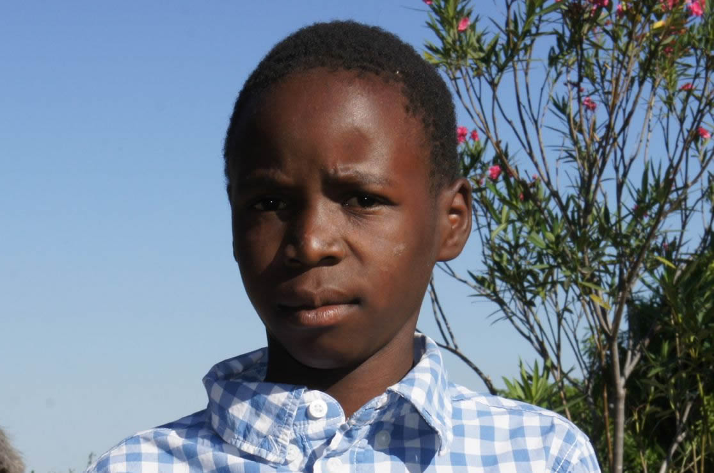 |
Daina Birgit Munkombwe Sikabota
Born 2009
The beauty of the relationsship between the late Dixon and Kotutu can hardly be expressed more clearly than in a face like this.
Daina is a girl that, in a glance, can express the essence of empathy and trust.
She will look you straight in the eyes, and if you are lucky, a smile will tell you, that this is what it is all about. Our children... |
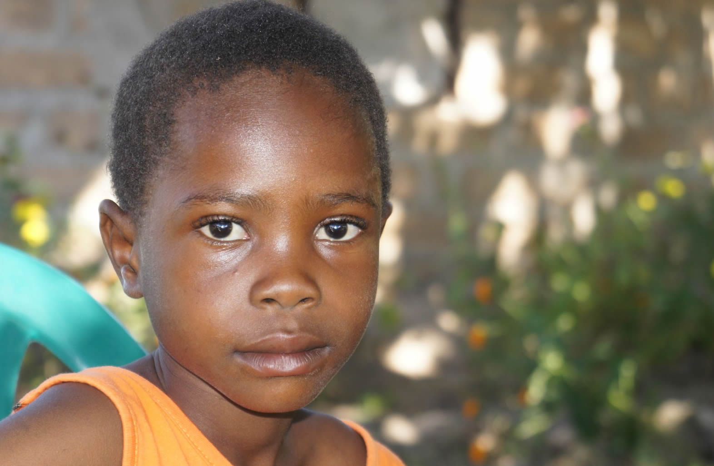 |
Elizabeth Bente Baabra Muunga Sikabota
Born 2010
Like her older sister, Elizabeth (also nicknamed Gigi), can disarm you with a single glance.
She had a rough start in life, with her skill of walking not advancing the way it should. But dispite pain, she managed.
Elizabeth is strong as an ox, and whatever she sets her mind on, she will execute. |
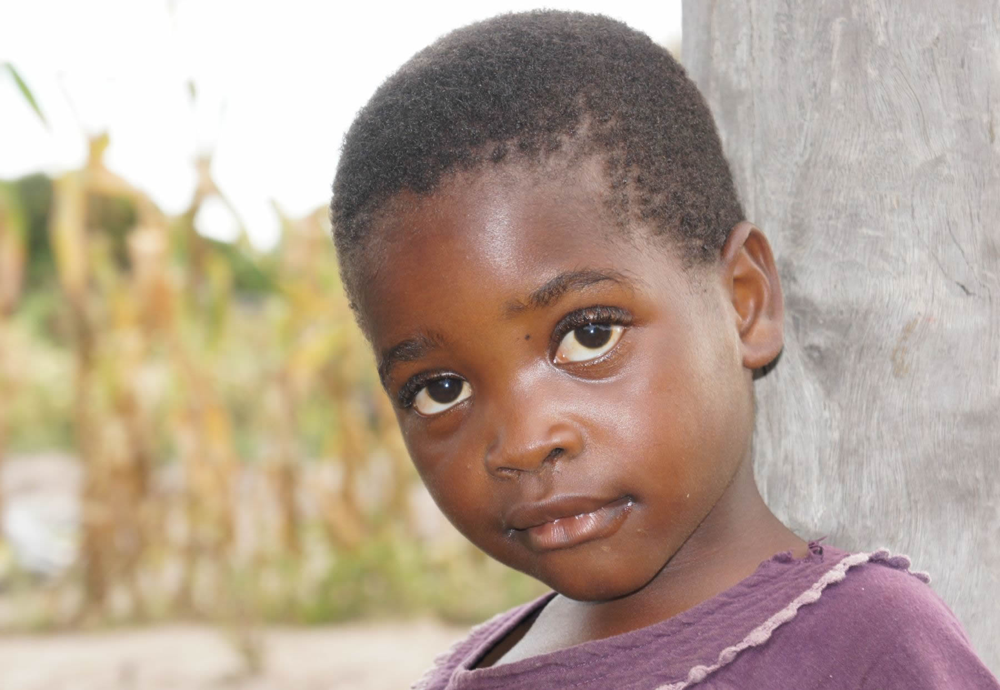 |
Birgit Berggreen
Born 1946
The explorer. The inspirator. Mother by kin. Mother by heart.
A connection between souls of origins vast apart began in 1979, when Birgit arrived in Mapanza with her daughter Line. Her son Jesper followed in 1981.
Her encounter with the Zambian soul, in particular expressed through Dixons life, made a profound change in her perspective of the world we live in.
Fortunately she is a storyteller. See more at Tegn.dk.
Birgit lives in Denmark |
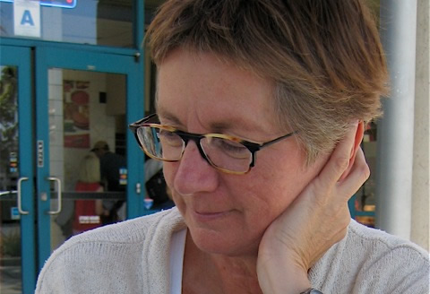 |
Jesper Berggreen
Born 1969
In 1981 Jesper met the real Africa. Starting school at Chibwe in Mapanza, where his sister Line and mother Birgit had lived for 2 years already.
The late Dixon helped with homework and language, and a permanent link was established.
Returning as an adult, that link has been reinforced, and it is agreed that they share the same mother.
The loss of his Zambian brother is hard to comprehend.
Jesper lives in Denmark |
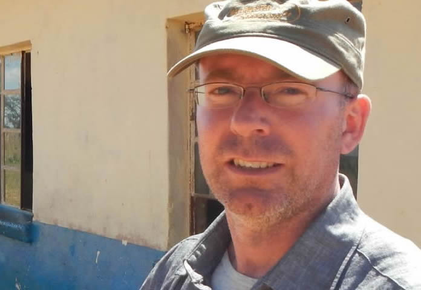 |
Line Berggreen
Born 1972
Line is one of the few fortunate, to have had two elder brothers of to different cultures. One black and one white.
As with Jesper, the late Dixon helped her with her studies at Chibwe, and the link was never lost.
Enriched in cultural insight, Line has made it her mission and profession in life, to connect people in the world, to achieve a better future for all.
The loss of her Zambian brother is a big blow.
Line lives in Denmark, for now... |
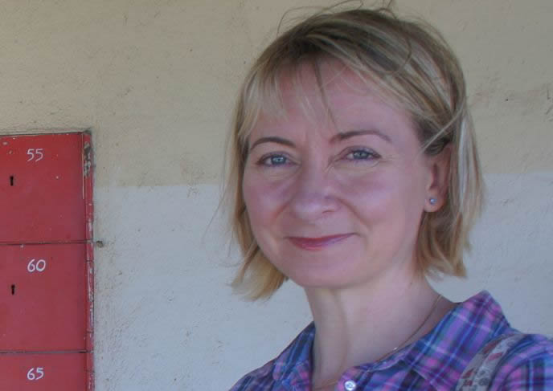 |
|